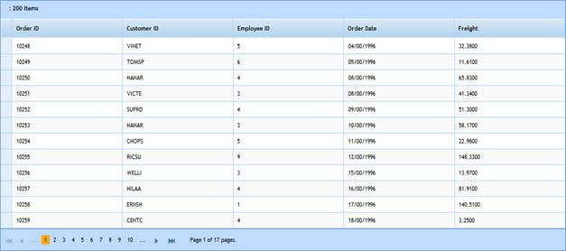

1. Create a model in the application (Refer to Getting Started>Adding a Model to the Application).
2. In the Index view, you can use DataSource to bind the data source. Then you need to explicitly specify the type of the data item.
|
View
<%=Html.Syncfusion().Grid<MvcSampleApplication.Models.Order>("FlatGrid") .Datasource((IEnumerable<MvcSampleApplication.Models.Order>)ViewData["data"]) .EnablePaging() .EnableSorting() .ActionMode("Server") .Column( column => { column.Add(c => c.OrderID).HeaderText("Order ID"); column.Add(c => c.CustomerID).HeaderText("Customer ID"); column.Add(c => c.EmployeeID).HeaderText("Employee ID"); column.Add(c => c.OrderDate).HeaderText("Order Date").Format("{OrderDate:dd/mm/yyyy}"); column.Add(c => c.Freight).HeaderText("Freight"); }) %> |
3. Set its data source and render the view.
|
Controller
/// <summary> /// Used to bind the grid. /// </summary> /// <returns>View page; it displays the grid.</returns> public ActionResult Index() { var data = new NorthwindDataContext().Orders.Take(200); return View(data); }
|
4. In order to work with paging and sorting actions, create a Post method for Index actions and bind the data source to the grid as shown in the following code sample.
|
Controller
/// <summary> /// Paging/sorting requests are mapped to this method. This method invokes the HtmlActionResult /// from the grid. The required response is generated. /// </summary> /// <param name="args">Contains paging properties.</param> /// <returns> /// HtmlActionResult returns the data displayed in the grid. /// </returns> [AcceptVerbs(HttpVerbs.Post)] public ActionResult Index(PagingParams args) { IEnumerable data = new NorthwindDataContext().Orders.Take(200); return data.GridActions<Order>(); } |
5. Run the application. The grid will appear as shown below.

Figure 346: Grid with Data